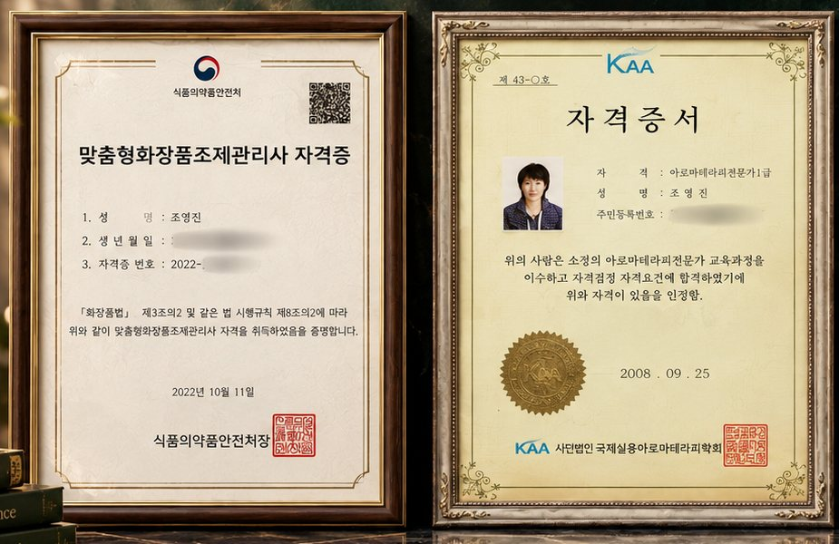

아로마테라피
고대 이집트에서부터 사람들은 향으로 몸과 마음을 돌봐 왔습니다. 식물에서 얻은 싱글 에센셜오일 20가지로 그 오랜 지혜를 오늘의 하루에 옮깁니다.
AROMATHERAPY · ASTROLOGY · FIVE ELEMENTS
별과 오행으로 찾는 오늘의 향.
국가자격을 갖춘 아로마테라피 전문가가 스무 가지 싱글 오일로 함께 찾아 드립니다.
생일만 알면 10초면 돼요 · 나의 별자리 향 찾기 →
01 · BRAND
향의 지혜, 별의 언어, 오행의 균형. 수천 년을 이어 온 세 가지 시선으로 지금의 나를 들여다보고, 그 사람에게 꼭 맞는 향을 찾아 드리는 아로마 브랜드입니다.
고대 이집트에서부터 사람들은 향으로 몸과 마음을 돌봐 왔습니다. 식물에서 얻은 싱글 에센셜오일 20가지로 그 오랜 지혜를 오늘의 하루에 옮깁니다.
메소포타미아에서 체계화된 별의 언어. 12별자리와 8행성의 상징을 20가지 향과 하나씩 짝지었습니다.
목·화·토·금·수 다섯 기운의 균형으로 지금의 나를 읽는 동양의 시선. 1:1 컨설팅의 바탕이 됩니다.
THE IGNITION METHOD
훼이맵의 모든 상담은 이 세 단계로 이어집니다. 20가지 싱글 오일을 7개 차크라와 12개 삶의 영역에 하나하나 대응시켜 두었기에, 읽어 낸 마음을 곧바로 향으로 옮길 수 있습니다.
02 · FREE EXPERIENCE
가입 없이 바로 시작할 수 있어요. 마음에 드는 결과는 버튼 하나로 상담 신청서에 함께 담깁니다.
지금 기분에 가장 가까운 것 하나를 골라 보세요.
향기카드와 자가진단은 향과 별의 상징을 빌려 나의 하루를 돌아보는 시간입니다. 미래를 예측하거나 특정한 효과를 약속하지 않으며, 의학적 진단·치료를 대신하지 않습니다.
03 · SCENT ATLAS
바깥 원은 열두 별자리, 안쪽 원은 여덟 행성. 점을 누르면 그 자리의 향기카드가 열립니다.
탑 8 · 미들 8 · 베이스 4
먼저 퍼지는 향, 중심을 잡는 향, 오래 머무는 향을 고르게 담아 처음이어도 블렌딩이 쉬워요.
04 · PROGRAMS
모든 프로그램은 컨디션과 좋아하는 향을 먼저 여쭙고, 향기카드로 지금의 마음을 함께 살피는 시간에서 시작합니다. 100% 예약제로 운영합니다.
사주·오행과 별자리로 지금의 균형을 읽고, 20가지 향 중 나에게 맞는 조합을 함께 고릅니다. 상담 후 맞춤 블렌드 레시피를 드립니다.
상담 예약 문의태어난 날과 시로 타고난 오행의 균형과 별자리를 풀어, 나에게 맞는 오일 4가지와 나만의 블렌드를 한 권에 담았습니다. 대표가 직접 읽고 다듬어 보내 드려요.
리포트 신청페이셜 · 바디 · 헤드&숄더 중에서 고르고, 그날 블렌딩한 오일로 진행하는 휴식 케어입니다.
케어 예약 문의향기카드 3장 리딩으로 고른 오일을 직접 섞어 나만의 롤온이나 룸스프레이를 만들어 가는 원데이 클래스입니다. 단체·기관 출강도 가능합니다.
클래스 문의
05 · FOUNDER
조영진 훼이맵FateMap 대표 · 국제실용아로마테라피학회
"저는 점술가가 아니라 아로마테라피스트입니다. 별과 오행은 나를 돌아보는 언어로 빌려 쓰고, 향은 오래 공부해 온 기준으로 고릅니다. 향기는 보이지 않지만 마음의 방향을 바꿀 수 있다고 믿습니다."
06 · REVIEWS
스마트스토어에서 훼이맵 싱글 오일을 구매하신 분들이 남긴 실제 후기입니다.
향"향도 깔끔하고 인위적이지 않아 좋습니다."
dbgu******* · 레몬
진하기"향이 진해서 희석해도 진하게 나네요."
peti***** · 프랑킨센스
다양함 · 응대"오일 종류도 다양하고 향도 좋아요. 문의사항에 대해 사장님과 소통이 잘 되어 좋았습니다."
peti***** · 프랑킨센스
순함"향이 좋고 순해요. 가격도 저렴해서 또 구매할 예정이에요."
tt**** · 네롤리
좋아하는 향"향이 상쾌하고 시원해서 제일 좋아하는 향입니다."
peti***** · 페퍼민트
스마트스토어 구매 후기 원문에서 발췌했으며, 띄어쓰기만 다듬었습니다.
08 · FAQ
네. 시향지나 티슈에 한 방울부터 시작해 보세요. 피부에 쓸 때는 반드시 캐리어오일에 희석합니다(10ml에 총 4방울 이내, 약 2%).
아니요. 향과 별의 상징을 빌려 나의 하루를 돌아보는 시간입니다. 미래를 예측하거나 특정한 효과를 약속하지 않습니다.
문의를 남겨 주시면 연락드려 일정을 정합니다. 상담 전 컨디션과 좋아하는 향, 피하고 싶은 향을 여쭙고, 당일에는 향기카드로 지금의 마음을 함께 살핀 뒤 오일을 고릅니다.
예약 문의에서 '정식 오행 사주 리포트'를 고르고 생년월일시를 남겨 주세요. 대표가 직접 검수한 리포트를 PDF로 보내드립니다. 태어난 시간을 모르셔도 연·월·일 중심으로 읽어 드려요.
천연 에센셜오일에는 향을 붙잡아 두는 합성 성분이 없어서, 먼저 퍼지는 탑 노트는 20~30분이면 은은해집니다. 향을 오래 두고 싶다면 베이스 노트(시더우드·베티버·파출리·프랑킨센스)를 함께 섞어 보세요.
사용 전 전문가와 상의해 주세요. 로즈마리·주니퍼베리·클라리세이지는 임신 중 사용에 주의가 필요하고, 페퍼민트·유칼립투스는 영유아 주변에서 피해 주세요.
레몬·그레이프후룻·버가못은 바른 뒤 햇빛을 받으면 피부가 예민해질 수 있어요(광독성). 피부에 사용한 날에는 햇빛을 피해 주세요. 낮에는 디퓨저나 티슈로 즐기는 것을 권합니다.
가능합니다. 인원·장소·희망 일정을 예약 문의에 남겨 주시면 맞춤 구성으로 안내드립니다.
아로마테라피는 일상의 휴식을 위한 셀프케어이며, 의학적 진단이나 치료를 대신하지 않습니다.